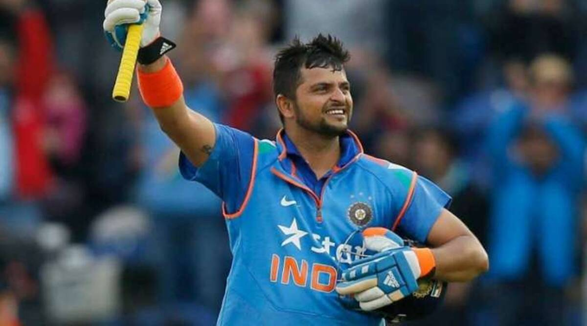

Suresh Raina - Mr IPL(chinna thala)

About the Mr IPL
☛ Suresh Raina[5] (pronunciation (help·info); born 27 November 1986[6]) is an Indian former international cricketer.[7]
☛ He occasionally served as stand-in captain for Indian men's national cricket team during the absence of the main captain. He played for Uttar Pradesh (UP) in domestic cricket circuit.[7] He is an aggressive left-handed middle-order batsman and an occasional off-spin bowler. He is the second-youngest player ever to captain India.
Early Life
☛ Suresh Kumar Raina was born in Muradnagar of Uttar Pradesh on 27 November 1986 into a Kashmiri Pandit family, to parents from Rainawari, Srinagar district of Jammu and Kashmir.[14][15] Raina lives in the Rajnagar neighborhood of Ghaziabad city. He has an older brother, Dinesh Raina.[16] He studied in a boarding school.
Domestic career
☛ In 2000, Raina decided to play cricket and subsequently moved from his hometown Muradnagar, Ghaziabad district to Lucknow, to attend the Guru Gobind Singh Sports College, Lucknow.
☛ He rose to become the captain of the Uttar Pradesh U-16s and came to prominence amongst Indian selectors in 2002 when he was selected at the age of 15+1⁄2 years for the U-19 tour to England, where he made a pair of half-centuries in the U-19 Test matches.
Indian Premier League
☛ Raina was awarded "best fielder" by the BCCI ahead of the finals of IPL 2010.[24] He played a vital half-century which turned the final to Chennai's tide who ultimately went on to become the champions beating the Mumbai Indians.
☛In 2016, Raina was signed for the Gujarat Lions after the suspension of CSK. He captained the team for the season, and remained consistent with batting, scoring 399 runs in 15 innings.
☛ In IPL 2018, Raina was retained by the returning Super Kings for a price tag of 11 crore ($1.7 million).
☛ On 23 March 2019, in the first match of the 12th edition of the tournament against RCB, he became the first batsman to score 5000 runs in the IPL.
☛ He went unsold in the 2022 IPL Auctions.[37] He then became a commentator for the tournament.
Playing style
☛ Raina is an attacking middle order left handed batter. He had more success in limited over cricket than in test. He has weakness of short pitched balls and throughout his career opposition teams tried to exploit this weakness.
☛Also in Ranji trophy he has struggled against short balls.[55] He has been widely criticised for his short ball weakness. He is part time off break bowler. His favourite scoring area is mid wickets on side. Most of the times he plays inside out off drive shot. While trying to hit on off side, he creates room for himself.
Personal life
☛Suresh Raina's father Trilokchand Raina was a military officer in an ordinance factory. His family left 'Rainawari' in Jammu and Kashmir union territory of India amid the exodus of Kashmiri Hindus in the 1990s and settled down in Muradnagar town, Ghaziabad district, Uttar Pradesh. Raina trained in the Guru Gobind Singh sports college, Lucknow in 1998. Raina has a sister and his one elder brother is in Indian Army.
☛Raina married Priyanka on 3 April 2015.[58] They have two children.
Achievements
☛He was the first Indian player to score 6000 as well as 8000 runs in his Twenty20 career.
☛He is the first ever cricketer to reach 5,000 runs in IPL
☛He holds the record of most no.of catches (107) in the IPL.
☛He is the second after Chris Gayle and first Indian player to hit 100 sixes in the IPL.[63]
☛He is the highest run scorer in the CLT20 (842 runs)[